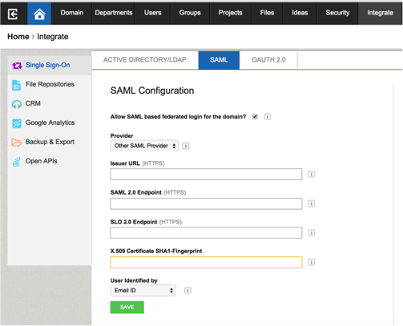

This setup might fail without parameter values that are customized for your organization. Please use the Okta Administrator Dashboard to add an application and view the values that are specific for your organization.
Login to MangoApps as an Administrator.
Navigate to Integrate>Single Sign-On>SAML.
Enter the following values (see screen capture at end of step for reference):
Provider: Select Okta from the dropdown list.
Issuer URL: Copy and paste the following:Sign into the Okta Admin Dashboard to generate this variable.
SAML 2.0 Endpoint: Copy and paste the following:Sign into the Okta Admin Dashboard to generate this variable.
SLO 2.0 Endpoint: Copy and paste the following:Sign into the Okta Admin Dashboard to generate this variable.
X.509 Certificate SHA1-Fingerprint: Enter the x509 CertificateFingerprint. Use the fingerprint below and convert it to the format MangoApps requires. Change all letters in the fingerprint below to upper case and insert colons after every second character. For example, if the fingerprint below were 1x2y3z, change it to 1X:2Y:3Z using a text editor, before pasting it into the formSign into the Okta Admin Dashboard to generate this variable.
User Identified by: Select Email ID.

Click Save.
Done!
Notes: IDP-initiated flows, SP-initiated flows, and Just In Time (Just In Time) provisioning are all supported.